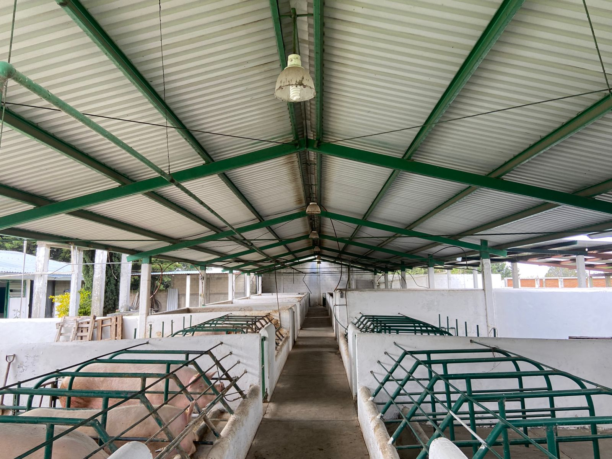
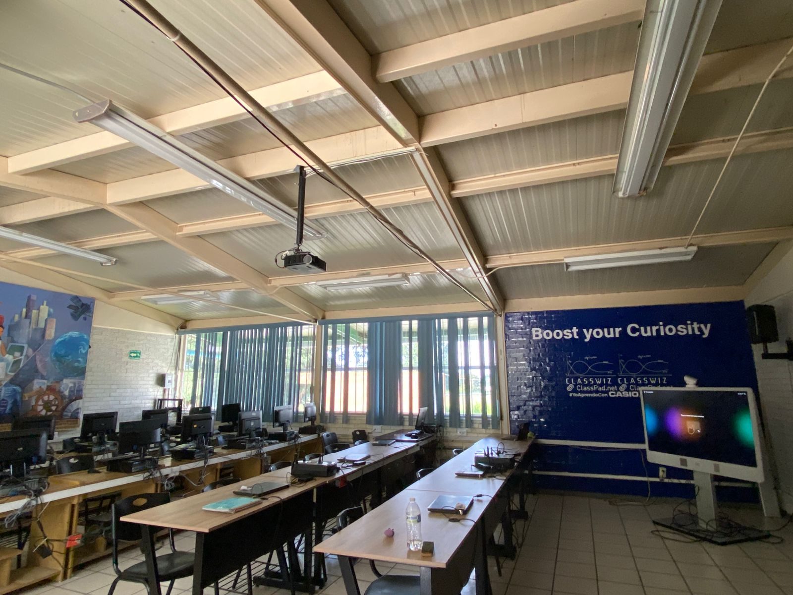

Programas

se encarga de realizar actividades relacionadas con la agricultura y la ganadería.
Leer más

planear, manejar e implementar proyectos de producción animal
Leer másobtener y gestionar información digitalmente, utilizando recursos informáticos para satisfacer las necesidades de los clientes
Leer más

analizar, diseñar, desarrollar, instalar y mantener software de aplicación
Leer másgestionar los registros contables y fiscales de una empresa
Leer más